Start your journey with the essential knowledge.
Abyss is challenging at first. You gonna find out everything can one-shot you. Dont worry, thats normal.
Focus on upgrade your gear, learn the enemy patterns, and try to explore the world.
And keep in mind, running is a strategy too. If you feel overwhelmed, retreat and learn from it, no one can blame you for that.
To go down:
Follow the arrow that lead to the abyss and do the tutorial ( the tutorial spot is on that path).
Path to The Abyss:
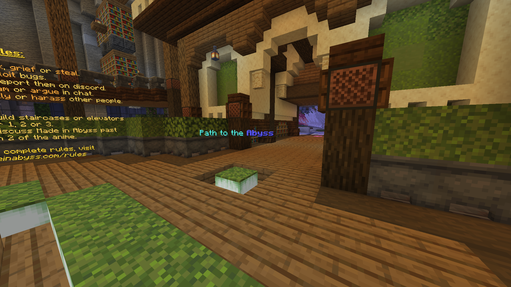
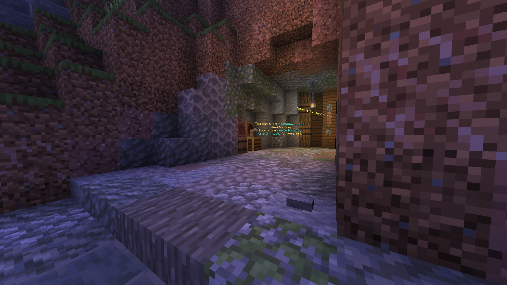
Climbing:
Climbing is a core mechanic in Abyss. Use it to reach high places, escape danger. Just keep in mind that stamina is limited.
How to climb: Hold the wall, then press right click while moving towards.
Advanced technique:
- Lunge: Left clicking in order to lunge to the spot ( this take around 40% of your stamina, so be careful when using it )
- Roof Hugging: Hugging the roof while climbing give you advantage in some small spot, Keep in mind that take a lot stamina.
- Climbing MLG: estimate your fall and climb right before you hit the ground may reduce or even negate the fall damage but can be very risky if you miss the timing.
Checkpoint:
You can save your check point by using the bonfire
Bonfire can be crafted as follows:
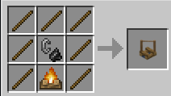
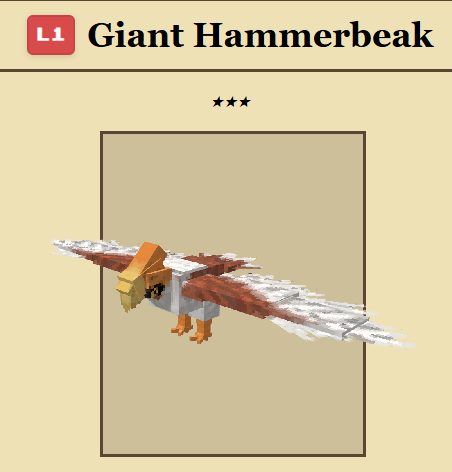
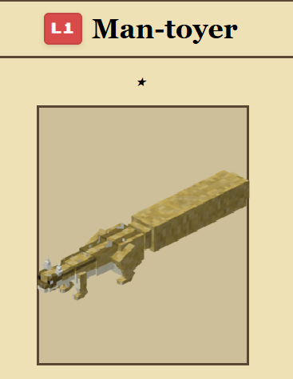
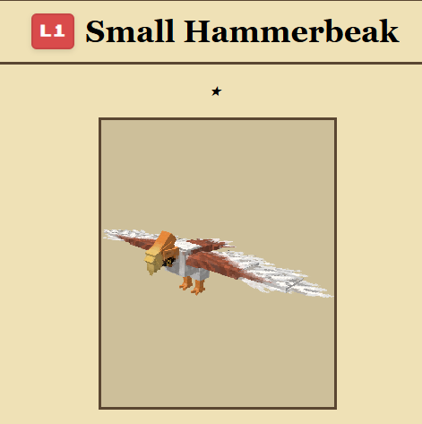
Focus on upgrading your gear to iron ( well at least iron tool so dive wont be a pain).
Stacks at least few stacks of food ( Publics farm can be found everywhere )
Wood is quite hard source in the early game, so try bamboo as the substitue.
Try to gather plant matter, hide and strings for bundles as the really good game storage.
Mob that drop Plant Matter:
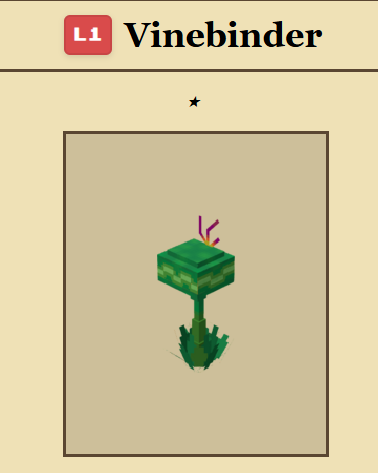
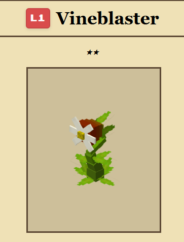
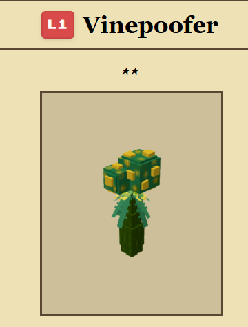
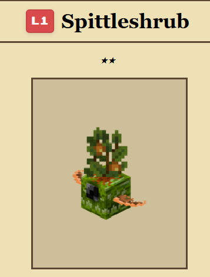
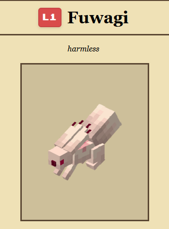
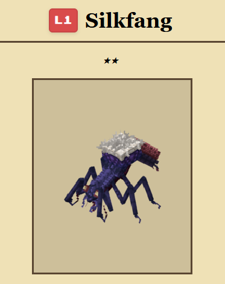